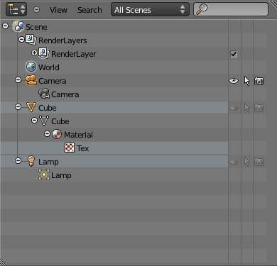
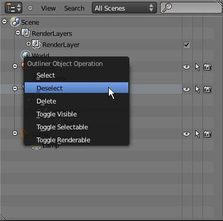

Outliner¶
The Outliner editor.
The Outliner is a list that organizes data in your scene. In the outliner, you can:
- View the data in the scene.
- Select and deselect objects in the scene.
- Hide or show an object in the scene.
- Enable or disable selection (to make an object “unselectable” in the 3D视图).
- Enable or disable the rendering of an object.
- Delete objects from the scene.
- Unlink data (equivalent to pressing the X button next to the name of a data-block).
- Easily select which render layer to render.
- Easily select which render pass to render (for example, you can choose to render just the Specular pass).
Using the Outliner¶
Each row in the Outliner shows a data-block. You can click the plus-sign to the left of a name to expand the current data-block and see what other data-blocks it contains.
You can select data-blocks in the Outliner, but this will not necessarily select the data-block in the scene. To select the data-block in the scene, you have to activate it.
选择 and Activating¶
单选 does not require any pre-selection: just work directly with LMB
(and/or RMB - contextual menu, see below) inside the name/icon area.
When you select an object in the list this way, it is selected and becomes the active object in all other 3D视图s.
- Activating a data-block
- To “activate” the data-block with
LMBon the icon of the data-block. Activating the data-block will automatically switch to the relevant mode. For example, activating the mesh data of the cube will select the cube and enter 编辑模式 while activating the object data of the cube will select the cube and enter 物体模式 (see right). - Toggle pre-selection of a group of data-blocks
Useful when you want to select/deselect a whole bunch of data-blocks. For this you must prepare the selection using, to your liking:
RMBorLMB,Shift-RMBorShift-LMB,RMBand drag orLMBand drag,
all outside the name/icon area. Those pre-selected have their line in a lighter color. You then can (de)select them with a
RMBon the name/icon area, which brings on a context menu (see bellow).Toggling pre-selection of a data-block.
- Context menu
Show the context menu for a data-block with
RMBon the icon or name. Depending on the type of the pre-selected data-block(s), you will have all or part of the following options:- Select.
- Deselect.
- Delete.
- Unlink - To unlink a data-block from its “owner” (e.g., a material from its mesh).
- Make Local - To create a “local” duplicate of this data-block.
Note
Some data-block types will not have a context menu at all!
Context menu for the Cube object.
- Deleting a data-block
- Use
Xto delete the selected data-block(s). - Expanding one level
- Use
NumpadPlusto expand one level down in the tree-list. - Collapsing one level
- Use
NumpadMinusto collapse one level up in the tree-list. - Expanding/collapsing everything
- Use
Ato expand/collapse all levels of the tree-list.
Toggling object-level restrictions¶
The three following options, in the right side of the Outliner editor, are only available for objects:
- Visibility (eye icon)
- Toggles the visibility of the object in the 3D视图.
Vwill toggle this property for any objects that are selected in the Outliner. - Selectability (mouse cursor icon)
- This is useful for if you have placed something in the scene
and do not want to accidentally select it when working on something else.
Swill toggle this property for any objects that are selected in the Outliner. - 渲染ing (camera icon)
- This will still keep the object visible in the scene, but it will be ignored by the renderer.
Rwill toggle this property for any objects that are selected in the Outliner.
Searching¶
You can search the file for data-blocks, either by using the Search menu in the header of the Outliner, or by using one of the following hotkeys:
F- Find.Ctrl-F- Find (case sensitive).Alt-F- Find complete.Ctrl-Alt-F- Find complete (case sensitive).Shift-F- Find again.
Matching data-blocks will be automatically selected.
Filtering the display¶
Outliner Display dropdown.
The editors header has a field to let you select what the outliner should show to help you narrow the list of objects so that you can find things quickly and easily.
- All Scenes
- Shows everything the Outliner can display (in all scenes, all layers, etc.)
- Current Scene
- Shows everything in the current scene.
- Visible Layers
- Shows everything on the visible (currently selected) layers in the current scene. Use the layer buttons to make objects on a layer visible in the 3D视图.
- Selected
- Lists the object(s) that are currently selected in the 3D视图. See selecting in the 3D视图 for more information.
- Active
- Lists only the active (often last selected) object.
- Same Types
- Lists only those objects in the current scene that are of the same types as those selected in the 3D视图.
- Groups
- Lists only Groups and their members.
- Sequence
- Lists data-block that are used by the Sequencer.
- Blender File
- Lists all data in the current blend-file.
- Data-Blocks
- Lists every data-block along with any properties that they might have.
- 用户首选项
- Lists options that can be found in the 用户首选项 along with some other settings.
- Orphan Data
- Lists data-blocks which are unused and/or will be lost when the file is reloaded.